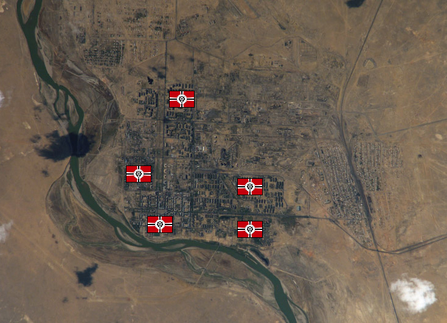

Baikonour Baikonour
Central Asia, Ural Mountains Fortress Lilienthal Although somewhat in the middle of nowhere, Baikonour is a massive and sprawling complex, the site of one of the first USSR spaceports and a tremendous complex to this day. It was used as the chief spaceport to supervise the migration to the colonies, and the CMC still maintains a small shuttle force here and ownership of one of the many launch bays. Baikonour is used as the principle personnel spaceport between Side 3 and Earth, as well as the most commercial spaceport in the solar system. As far as land mass goes, it is the largest fortress on Earth. Lilienthal One of the oldest and most influential commanders of the MAF, Lilienthal is well liked by Kycillia, as well as by the civilians of Baikonour and the CMC. He has a reputation for being fair and playing by the rules, and makes sure the CMC presence at Baikonour is well treated, helping to improve Zeons political standing with the rest of the solar system. Although he serves under Ma Kube, he is given a wide berth, known for commanding Baikonour efficiently and effectively. Baikonour  |